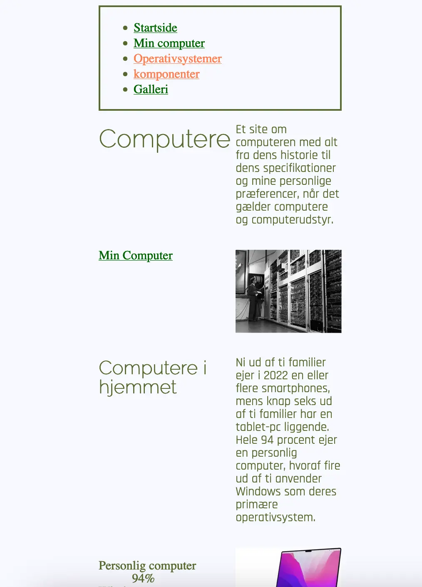

02.
Grundlæggende Web
Proces
Jeg skabte hurtigt en mobilvenlig version af hjemmesiden ved hjælp af semantisk markup og HTML-opsætning.
Implementeringen af desktop-versionen til studiestartsprøven involverede brug af media queries. Jeg fulgte nøje wireframes og layoutdiagrammer som var en svær opgave. Visual Studio Codes plugin, Rainbow Tags, skabte struktur og klarhed, hvilket gjorde det lettere at navigere min html.
Min tilgang til responsivt design, sammen med værktøjer som Rainbow Tags, bidrog til en effektiv udviklingsproces.


Hvad tog jeg ikke med
Efter introduktionen til CSS påbegyndte jeg ændringerne til desktop-versionen. Jeg tilpassede baggrundsfarven, tilføjede hover-effekt i nav, hvilket ændrede teksten til italic Min tilgang var ikke kun at ændre farver, men også at eksperimentere med forskellige elementer.
Forskellen mellem det originale mobile site og den responsive version er tydelig og viser mine eksperimenter med design.
Før:

Efter:


Hvad var den største udfordring
Min største udfordring opstod under udarbejdelsen af layoutdiagrammet for desktop-versionen af gallerisiden, som jeg tacklede i den sidste del af opgaven. Her modtog jeg hjælp fra mine lærere og medstuderende for at få grid til at give mening.
Opgaven var overvældende at skulle lære et nyt sprog, som kodening jo er. Men når det lykkedes, og man ser det færdige resultat, var det virkelig tilfredsstillende. Jeg tror ikke jeg var den eneste der aldrig havde troet at man kunne komme til at kode. Men jeg bestod og det var jeg mega stolt af.